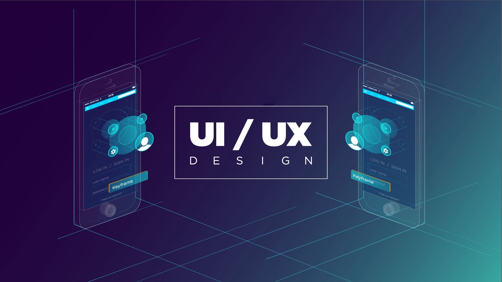

- 
-

-

-

-

No es para menos. Se han convertido en términos imprescindibles siempre que se habla de diseño o desarrollo web. Por este motivo, no es de extrañar que el perfil del diseñador UX/UI sea uno de los más demandados en el mercado laboral.
A pesar de lo que muchos piensan, UX y UI son conceptos diferentes. Sin embargo, están muy relacionados. Y la combinación de ambos es esencial para crear un diseño ideal para el consumidor.
Para entender mejor todo esto vamos a empezar por el principio.
UX (User Experience) hace referencia a la forma en la que los usuarios interactúan con un producto o servicio. Es decir, cómo y para qué un usuario utiliza un objeto o interactúa con una web o app.
Sin duda, la esencia del diseño UX está en el conocimiento de los usuarios. En otras palabras, para crear un buen diseño UX hay que comprender las necesidades de los usuarios y, por supuesto, satisfacerlas de una forma simple y clara. Por lo tanto, un buen resultado es aquel que es útil para el usuario.
Por otro lado, el diseño UI o User Interface se centra en la parte visual. Es decir, si UX se encarga de que un producto sea útil para los usuarios, UI lo hace atractivo y visual.
Los colores, la tipografía, las imágenes son algunos de los elementos con los que trabaja el diseñador UI para hacer que un producto sea atractivo. Pero de nada sirve tener un producto bonito si no satisface las necesidades de los usuarios para los que está pensado. Por eso, UX y UI deben ir de la mano para lograr un producto 100% pensado para los clientes.